Journey drawer: real screenshots
Spoj · production build on a 390×844 Android Chrome viewport, live Ubian data, Bratislava · 2026-10-28 · PR #94 · design
Checked: tiers 1, 2 and 3, Android browser back through the pages and out of the drawer, Sledovať and Nesledovať, ⌄ into the pill, reopening from the pill while waiting and while riding, finished legs hidden and shown, missed-change warnings above and below, full height, dark mode, and the desktop sidebar.
Simulated: "riding" (14, 15) and "on the second leg" (12, 13) come from editing the stored ride, since no journey was underway during the test. Not checked here: the iOS edge swipe, and the vehicle drawn on a tier 1 leg's line, which needs a real ride.
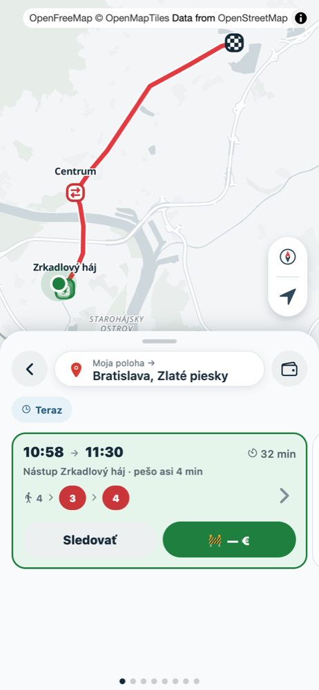
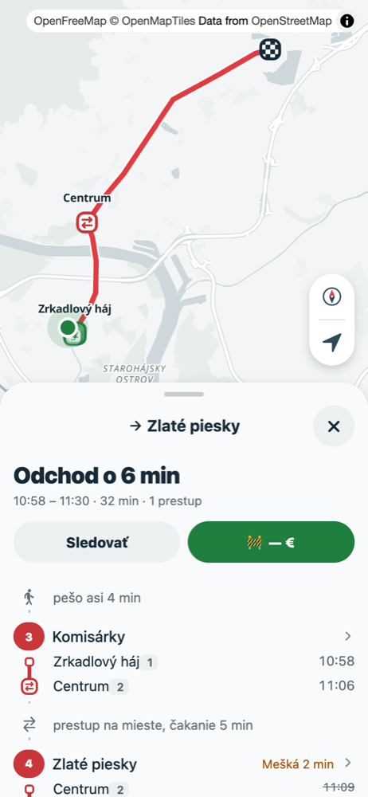
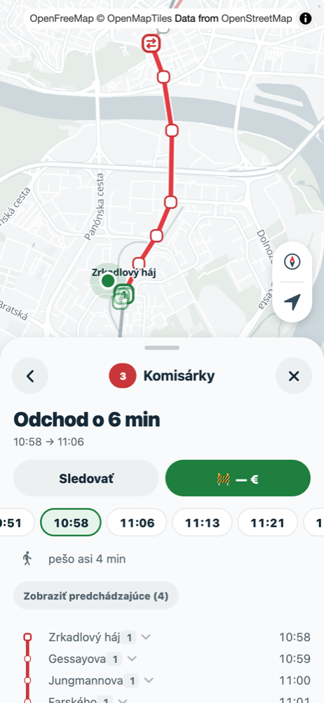
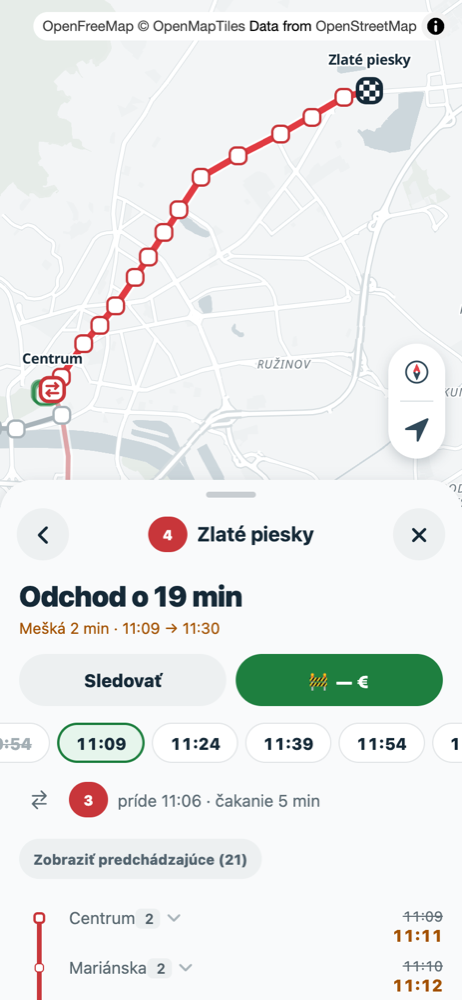
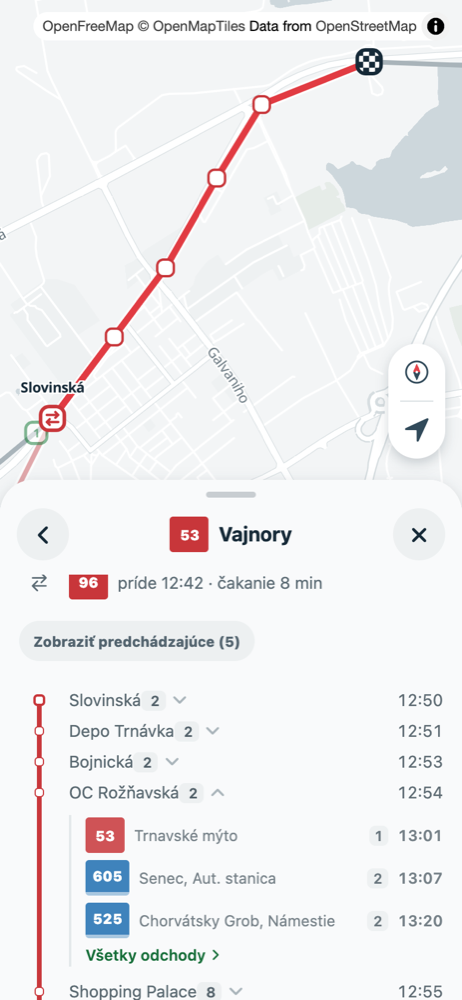
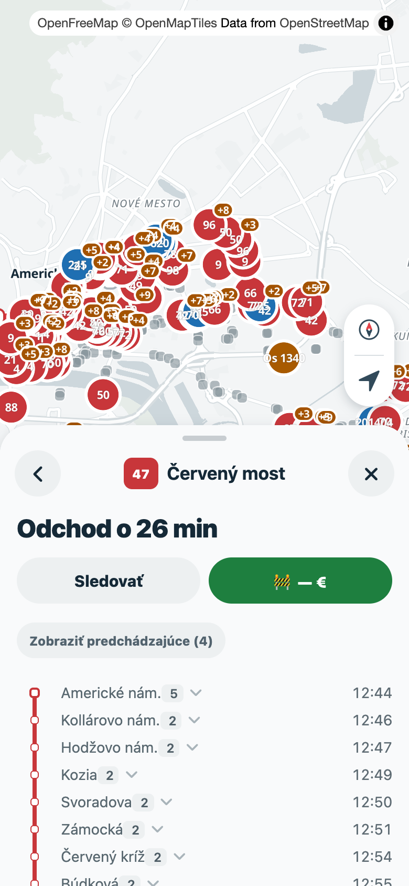
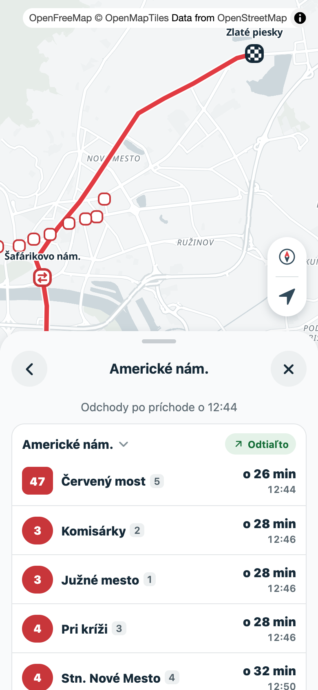
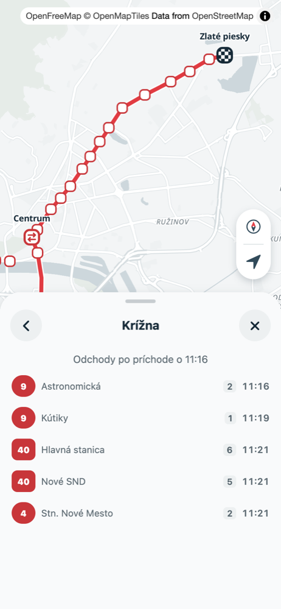
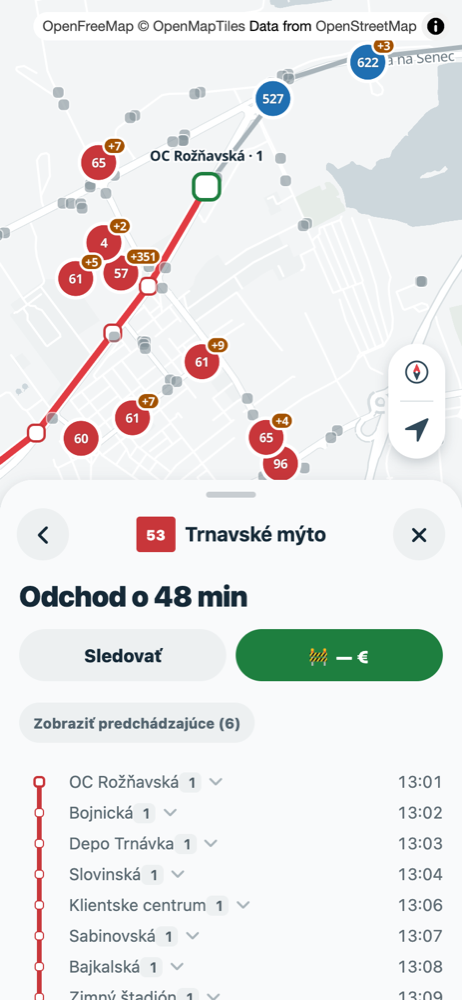
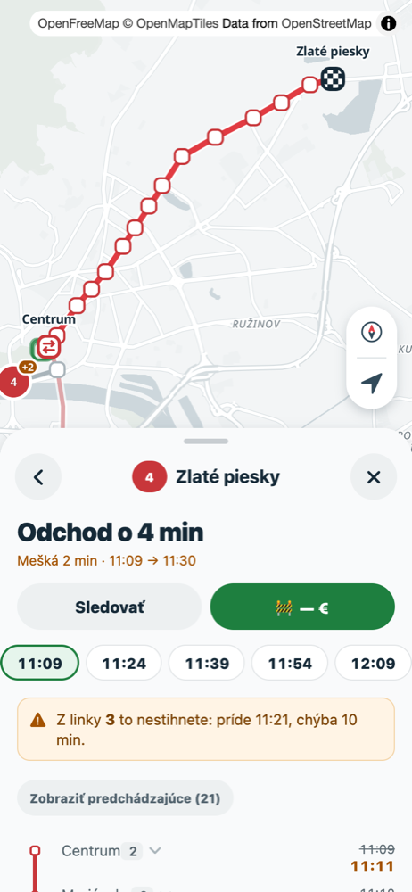
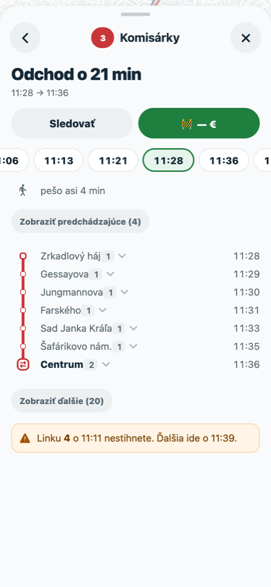
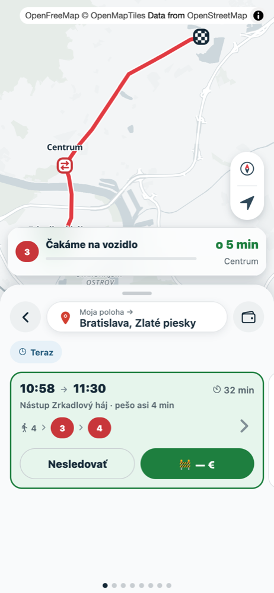
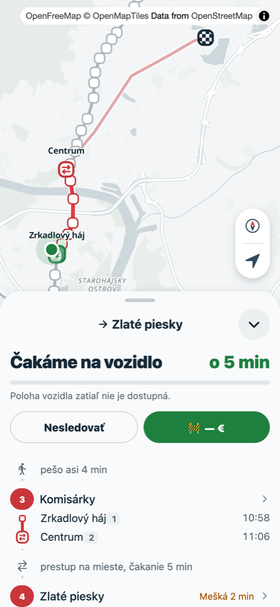
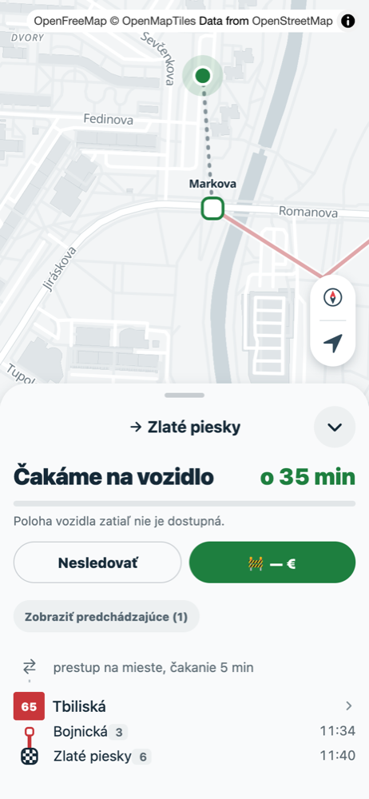
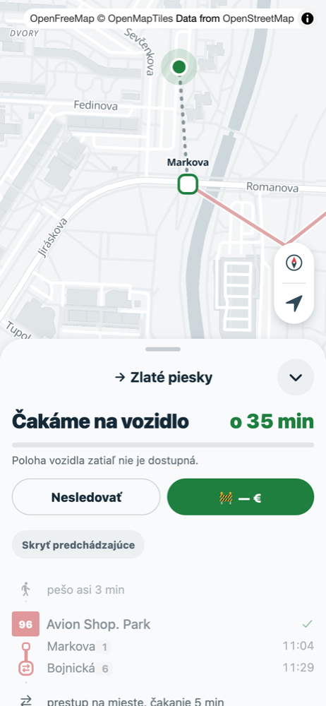
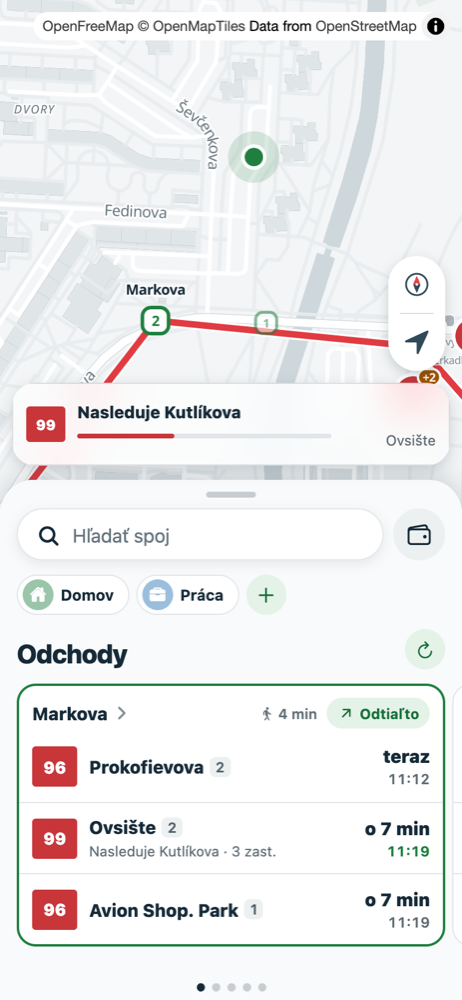
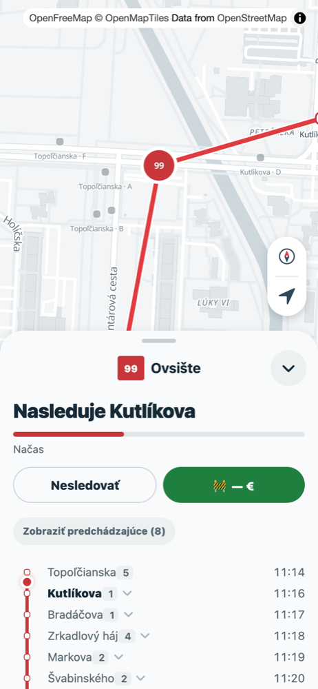
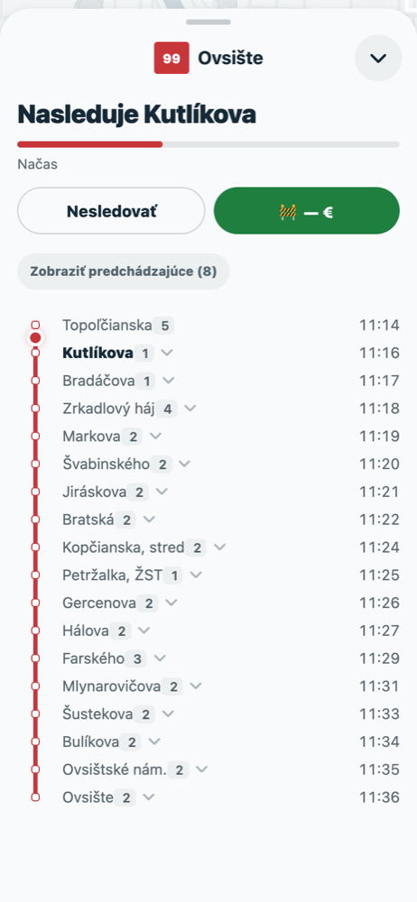
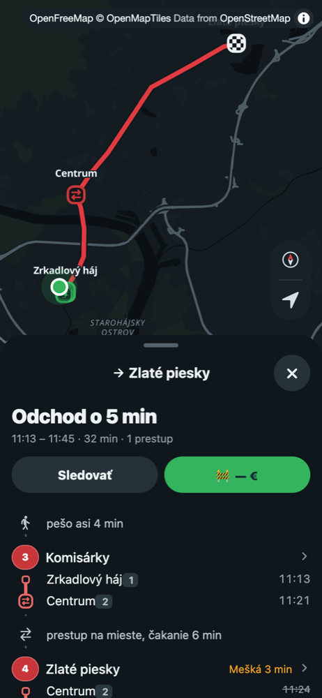
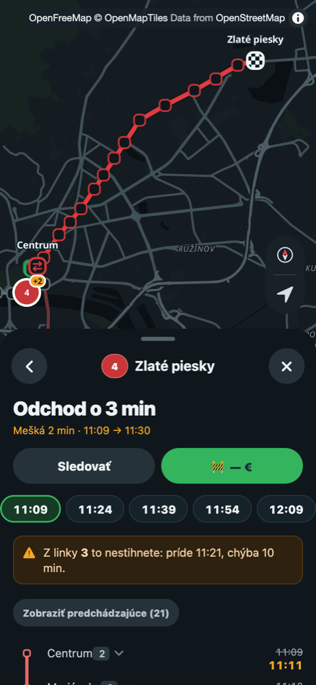
Desktop
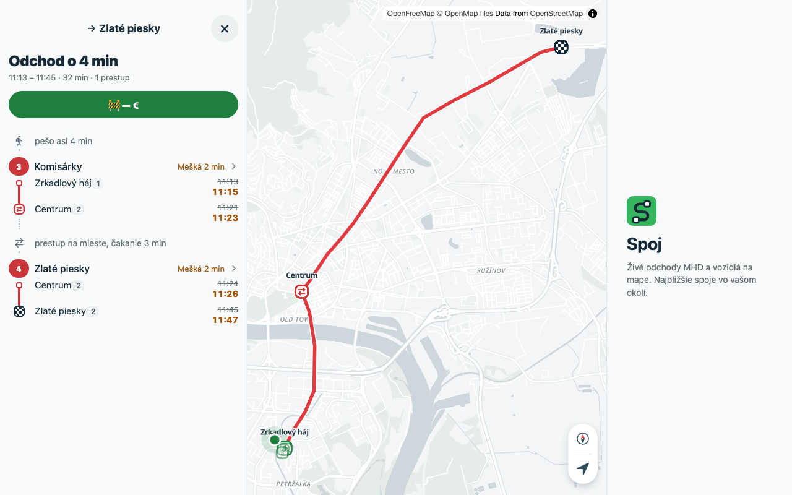